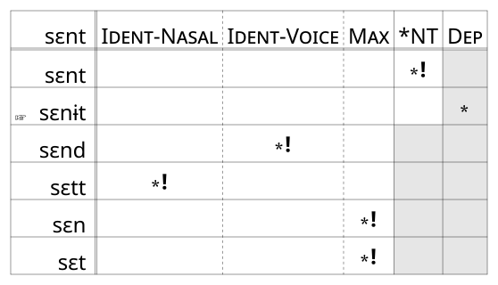
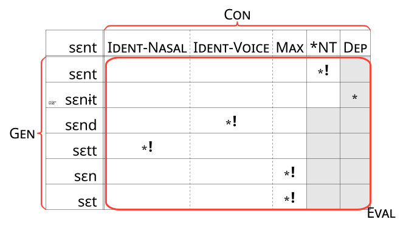
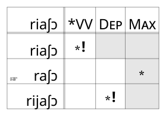

Constraint Based Phonology
Rules Recap
The anatomy of a rule

Rules Recap
Voiceless stops get deleted following a nasal.
Rules Recap
Derivations
What about phonotactics?
Remember this impossible vs impossible word of English?
blɪk
*tlɪk
What about phonotactics?
To avoid *tl, people resort to multiple strategies
Chipotle
Input: tʃɪ.poʊ.tle
Outputs
/e/ deletion: tʃɪ.pa.ɾl̩
Metathesis: tʃɪ.poʊɫ.te
Epenthesis: tʃɪ.poʊ.tɨ.le
/t/ glotalling: tʃɪ.poʊʔ.le
Constraint Based Phonology
*tl seems like a constraint you know about your language, and there are multiple ways you can try to repair violations of that constraint.
Constraint based phonology tries to ask: What if all of phonology was actually this way?
Commonly Recurring Patterns
Both English and Somali have rules that do something to two coronal stops in a sequence.
Commonly Recurring Patterns
Instead of having two completely different rules for these two language, what if we instead said there’s a problem they have in common (two coronal stops in a sequence), and they’re choosing different strategies to repair it?
Optimality Theory
Optimality Theory (OT) tries to understand phonology as a set of competing constraints.
Markedness Constraints
Constraints that say “Don’t do something”
- *TL: Don’t have a [tl] or [dl] onset
Faithfulness Constraints
Constraints that say “Don’t change anything”
Ident: Don’t change any features
Max: Every segment in the input should have a corresponding segment in the output.
Dep: Every segment in the output should have a corresponding segment in the input.
Faithfulness Constraints
Violates DEP
Violates Max
Optimality Theory
A recurring pattern across languages is that nasal + voiceless sequences are disprefered.
*NT
Optimality Theory
What are all the ways we could satisfy *NT for this input?
sɛnt
Optimality Theory
Input: sɛnt
Epenthesis: sɛnɨt
C1 Deletion: sɛt
C2 deletion: sɛn
Voicing: sɛnd
Denasalization: sɛtt
Optimality Theory
If we are working with a language that chooses Epenthesis, we need to ask, why didn’t it choose any of the other repair options?
Optimality Theory
Input: sɛnt
- Epenthesis: sɛnɨt
- Violates Dep
- C1 Deletion: sɛt
- Violates Max
- C2 deletion: sɛn
- Violates Max
- Voicing: sɛnd
- Violates Ident-Voice
- Denasalization: sɛtt
- Violates Ident-Nasal
Optimality Theory
If a language has epenthesis between nasals and voiceless obstruents:
Avoiding *NT is more important than satisfying Dep
Satisfying Max, Ident-Voice, Ident-Nasal are all more important than avoiding *NT
Optimality Theory
An OT Tableau

Optimality Theory

Optimality Theory
Con: The set of constraints
Gen: Generator of a potentially infinite number of output forms given the input form.
Eval: The Evaluator that scores each Input:Output pair
Optimality Theory
The fact that there are so many recurring patterns across languages means maybe there’s a universal set of constraints.
Optimality Theory
Example: Yoruba
ri+igba ➙ rigba
ri+aʃɔ ➙ raʃɔ
ri+ɔbɛ ➙ rɔbɛ
Constaints:
*VV: No two vowels in squence
Max
Dep
Ident
Optimality Theory
List many possible outputs for an input
Work through the necessary constraint ranking
Optimality Theory
